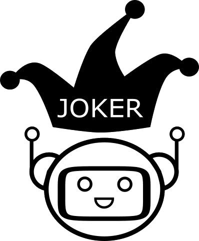

JOKER

• Accueil • Tâches • Programme CLEF • Organisateurs • Nous contacter • CLEF 2022 • CLEF 2023 • CLEF 2024 • CLEF 2025 •
Organisateurs :
-
Liana Ermakova (Université de Bretagne Occidentale, Brest, France)
Professeur associé en informatique
HCTI, Université de Bretagne Occidentale, Brest, France
Chef de projet, président général -
Tristan Miller (Université du Manitoba, Canada)
Professeur adjoint, Département d'informatique
Organisateur des tâches 1 (EN) -
Anne-Gwenn Bosser (Bretagne INP - ENIB, Brest, France)
Professeur associé en sciences informatiques
Lab-STICC (CNRS UMR 6285), co-responsable de l'équipe COMMEDIA
Organisateur des tâches 1 (FR) -
Poojan Vachharajani (Amazon, Hyderabad, Inde)
Scientifique appliqué
Organisateur des tâches 1 (EN, Hinglish) -
Jaap Kamps (Université d'Amsterdam, Amsterdam, Pays-Bas)
Professeur associé, Institut de logique, de langage et de calcul.
Co-organisateur des tâches 1, 2 et 4. -
Igor Kuzmin (Universitat Pompeu Fabra, Barcelone, Espagne)
Ingénieur de recherche BSC, doctorant à l'UPF
Organisateur des tâches 2 (ES) et 4
Ce projet a reçu une subvention gouvernementale gérée par l'Agence Nationale de la Recherche dans le cadre du programme "Investissements d'avenir" intégré à France 2030, avec la référence ANR-19-GURE-0001.